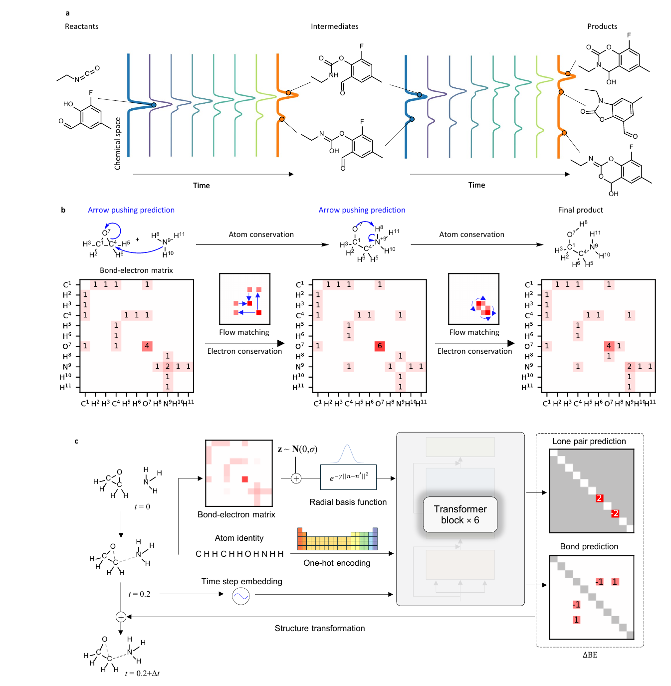
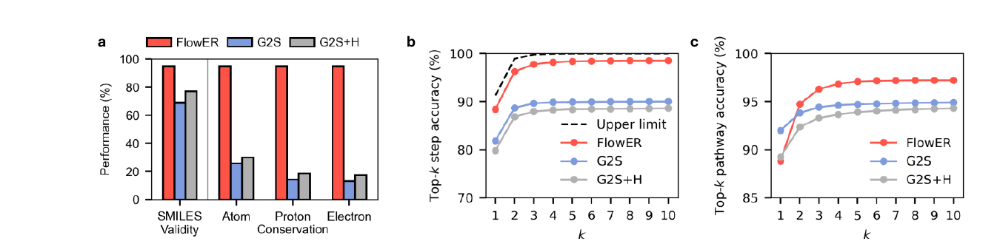
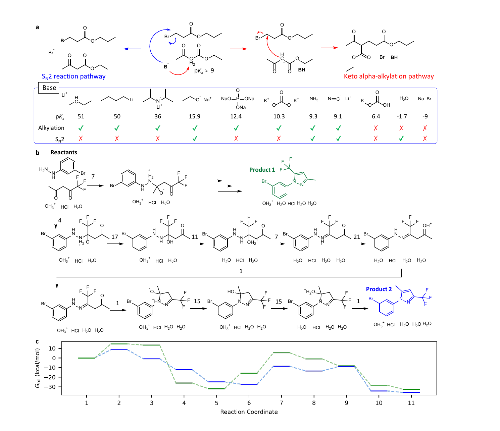
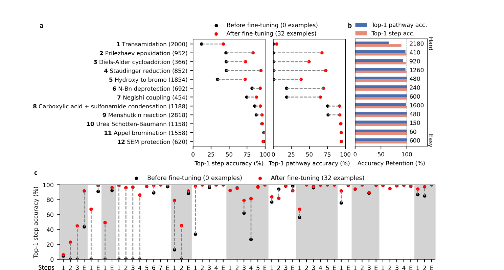

A reaction model should not be allowed to invent atoms. That sounds obvious, but it is not how many machine learning models for organic reaction prediction are built. A sequence model can learn a lot from SMILES strings. It can also emit a product that violates mass conservation, loses a proton without accounting for it, or changes the electron count in a way that no reaction mechanism could support.
This is why the FlowER paper by Joung, Fong, Casetti, Liles, Dassanayake, and Coley is worth reading carefully. The paper is not just another reaction prediction benchmark. It is a reminder that chemistry is not only a data distribution. Chemistry is a constrained transformation of matter. If a model is given a representation where atoms and electrons can silently appear or disappear, the model has already been allowed to make a chemically impossible move.
The central idea is simple and strong. Instead of predicting the product directly as a string, FlowER predicts how electrons redistribute among a fixed set of atoms. The model uses a bond electron matrix, where the diagonal entries describe lone pair electrons and the off diagonal entries describe shared bond electrons. A reaction step is then a change in this matrix. If the sum of the change is constrained to zero, electron conservation is built into the prediction rather than learned as a statistical habit.

The right representation changes the problem
There are two ways to look at this paper. The first is as a reaction outcome model. On that reading, FlowER is a model that takes reactants and proposes products and mechanisms. The second reading is more interesting. FlowER is a case study in what happens when a representation forces the model to respect a physical law before optimization ever begins.
Most sequence based reaction models learn a mapping from reactant strings to product strings. That can be effective when the test reaction is close to the training distribution. But the string representation is permissive in the wrong way. It knows syntax better than chemistry. A model can generate a valid string that is chemically inconsistent, and the error may not be obvious until a chemist inspects the atoms by hand.
FlowER moves the learning problem into an electron bookkeeping space. The atoms are fixed. The total electron count is fixed. The model is asked to move electron density through a continuous flow matching process from reactant state to product state. In that sense, the model is not learning chemistry from a blank slate. It is learning inside a box shaped by conservation.
This is the kind of inductive bias that makes sense for scientific machine learning. We should not expect data to teach a neural network every physical law if the architecture gives it an easier way to cheat. Conservation is too important to leave as a pattern the model might or might not infer.
Conservation is not a cosmetic constraint
The conservation result is the cleanest part of the paper. FlowER generates valid intermediate or product SMILES for about 95 percent of single step test reactions. More importantly, it guarantees heavy atom, proton, and electron conservation because of the bond electron matrix formulation. The sequence baselines do not. The paper reports that only 31.4 percent of G2S predictions and 30.1 percent of G2S plus H predictions preserve heavy atoms. When proton and electron conservation are also required, the cumulative conservation rates fall to 14.3 percent and 17.3 percent.

This matters because a hallucinated atom is not just a minor error. It breaks the downstream workflow. If a proposed mechanism does not conserve matter, then thermodynamic calculations on the intermediates become meaningless. Automated quantum chemistry cannot rescue a pathway whose formula changes for no physical reason. The model output has to be chemically closed before any more expensive validation can be useful.
The paper shows this point very directly with an unrecognized reaction from 2024 patent literature. FlowER recovers a ten step pathway to two recorded products. Because the pathway conserves atoms and electrons, the authors can compute relative free energies along the proposed mechanism and compare the two product routes. A sequence model can sometimes reach a product, but if it reaches that product through a mass violating path, the mechanism is not a useful object for further calculation.
The model is generative in a chemically useful way
Flow matching gives FlowER more than a single deterministic answer. Repeated sampling can produce distinct products, side products, and branching mechanisms. This matters because real reactions do not only have one output. Reaction conditions, catalysts, acids, bases, and leaving groups can shift which path is favored. A useful reaction model should represent that branching rather than collapse it into one string.
One of the better examples in the paper is amide formation. Starting from the same acid and amine, FlowER predicts different multistep mechanisms when DCC, DCC with HOBt, CDI, BOP, or HATU are present. The final amide can be the same, but the intermediates and byproducts differ. That is exactly the kind of information a chemist actually uses. The product alone is a partial answer. The path explains why the reagent choice matters.
This is where the model feels most different from a string translator. The paper is not claiming that every generated arrow pushing sequence is the true microscopic path. Arrow pushing is a representation of electron bookkeeping, not a full quantum dynamical trajectory. Still, it is the representation chemists use to reason about reactions. A model that outputs chemically conserved arrow pushing is therefore easier to criticize, debug, and connect to first principles calculations.
Chemical heuristics appear but they are not magic
The paper also probes whether FlowER learns textbook style chemical reasoning. In one test, the authors vary the base in a beta ketoester alkylation problem. Strong bases tend to give the alpha alkylation route, while species with stronger nucleophilic character can favor an SN2 pathway. FlowER reproduces much of this behavior. Bases with conjugate acid pKa above about 9 often lead to the alkylation product, while weaker or more nucleophilic choices can shift the prediction.

I would be careful about overinterpreting this result. The model is not discovering pKa from first principles. It is learning from a curated reaction corpus where acid base steps were inserted during mechanism curation. That is still valuable. A model does not have to be born from quantum mechanics to be useful. But the source of the knowledge matters. If some reaction class is underrepresented, or if a reagent is usually used as a nucleophile rather than a base in the data, the model can inherit that bias.
The authors are refreshingly clear about this. Sodium ethanethiolate is one example where dataset trends and representation choices shape the output. The model does not float above the training data. It is constrained by chemistry and trained by examples, and both parts matter.
The fine tuning result is the most practical one
The most useful result may be the out of domain fine tuning experiment. The authors test FlowER on twelve reaction types that were absent from training. Before fine tuning, performance varies widely. That is expected. Some reaction types share elementary steps with the training set, while others require steps the model has not seen.
The impressive part is what happens after fine tuning on only 32 new reactions per reaction type. FlowER reaches top one pathway accuracy above 80 percent for eleven of the twelve types, and the paper reports that fine tuning does not cause catastrophic forgetting on the original test set. The model seems to adapt by reusing mechanistic pieces it already learned rather than relearning reaction prediction from scratch.

This is the strongest argument for mechanism level learning. A named reaction can look out of distribution at the product level while still being assembled from familiar elementary operations. Nucleophilic attack, proton transfer, elimination, cyclization, and neutralization can appear across many reaction families. If the model learns those moves, then some forms of extrapolation become interpolation in a mechanistic basis.
That idea feels very general. In materials modeling, a new composition can look unfamiliar at the formula level while still being built from local environments, bonding motifs, and electronic features the model has seen before. The representation decides what counts as new. FlowER makes that point clearly for organic reactions.
What I would not claim
I would not claim that FlowER solves reaction mechanism prediction. The model still learns valence rules rather than enforcing them perfectly, so occasional structural anomalies can appear. It also depends on imputed mechanisms generated from reaction templates. Those templates make the learning problem possible at scale, but they also define what the model is allowed to see as a plausible mechanistic explanation.
Reaction conditions are another limitation. FlowER can include catalysts, bases, solvents, and other agents as chemical participants in the bond electron matrix, but it does not directly represent continuous variables such as temperature, concentration, solvent polarity, or reaction time. Those variables often decide selectivity and yield. Treating a reagent as present or absent is not the same as modeling the chemical environment.
There is also a deeper conceptual caution. Arrow pushing is an extremely useful chemical language, but it is still a language. It is not the electron density, not a transition state, and not a free energy surface. The paper becomes strongest when FlowER outputs are treated as conserved, inspectable hypotheses that can be tested by quantum chemistry or experiment, not as final truth.
Why this connects to interpretable materials learning
The connection to materials discovery is not the reaction type. It is the role of representation. In my own work, descriptors like ELF matter because they turn electronic structure into a real space object that supports chemical reasoning. Interstitial localization, quasi atoms, and chemical templates are not just numbers. They are ways of making the electronic structure readable.
FlowER does something similar for reaction prediction. It turns a product prediction problem into an electron redistribution problem. The model still uses a neural network, but the network is forced to speak in a chemically meaningful bookkeeping system. That makes the output easier to inspect and harder to abuse.
This is a useful lesson for scientific machine learning more broadly. We should not only ask whether a model is accurate. We should ask whether it fails in physically interpretable ways. A model that breaks conservation is not just inaccurate. It is unphysical in a way that poisons everything downstream. A model that respects conservation can still be wrong, but its wrong answers are often better formed and easier to test.
What I take from it
The paper is strongest because it does not treat interpretability as a visualization after the fact. Interpretability is built into the task. The model predicts electron flow because that is the chemically meaningful object. Conservation is built into the representation because conservation is not optional.
This is the direction I want more chemistry machine learning to move. Not just bigger models. Not just larger datasets. Better choices about what the model is allowed to predict. The most important design decision is often not the number of transformer blocks. It is the object the model is trained to move.
For reaction prediction, FlowER argues that the right object is the electron bookkeeping state of the reacting system. For materials, the analogous objects may be local environments, symmetry respecting fields, conserved charges, or physically consistent energy surfaces. The details differ, but the principle is the same. If we want machine learning to help with chemistry, we should make it keep score in the same units chemistry uses.
References
- Joung, J. F., Fong, M. H., Casetti, N., Liles, J. P., Dassanayake, N. S. and Coley, C. W. Electron flow matching for generative reaction mechanism prediction obeying conservation laws. arXiv 2502.12979v1. 2025.
- Tong, A., Fatras, K., Malkin, N., Huguet, G., Zhang, Y., Rector-Brooks, J., Wolf, G. and Bengio, Y. Improving and generalizing flow based generative models with minibatch optimal transport. ICML. 2024.
- Schwaller, P., Vaucher, A. C., Laplaza, R., Bunne, C., Krause, A., Corminboeuf, C. and Laino, T. Machine intelligence for chemical reaction space. WIREs Computational Molecular Science. 2022.
- Tu, Z., Stuyver, T. and Coley, C. W. Predictive chemistry. Machine learning for reaction deployment, reaction development, and reaction discovery. Chemical Science. 2023.
Figures in this post are cropped from the original paper and captions were rewritten here. The paper is available under the Creative Commons Attribution 4.0 license.